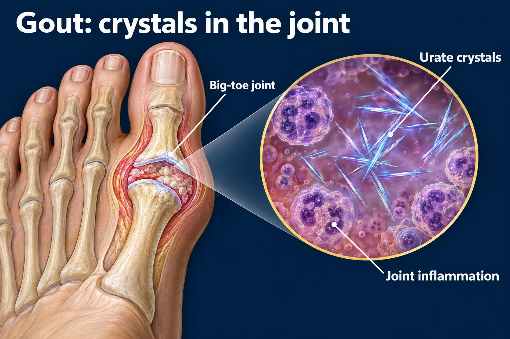

ABSN STUDY HUB · VISUAL STUDY CARD
Gout: two treatment goals

Course labels and notes from the original graphic, arranged into readable sections. The illustration is schematic.
Course overview
NUR 258 / MODULE 3 / VISUAL STUDY GUIDE
- Gout: two treatment goals
- Relieve today’s inflammation and reduce future urate crystal burden.
DURING A FLARE
Goal: reduce inflammation / pain
- Prescribed options include: • Colchicine • An NSAID • A glucocorticoid
- Choice depends on kidney function, bleeding risk, interactions and other patient factors.
LONG-TERM PREVENTION
Goal: lower serum urate
- Allopurinol is the preferred first-line urate-lowering drug.
- Start low; titrate using urate labs.
- Typical serum urate target: <6 mg/dL.
- Anti-inflammatory prophylaxis is used when starting therapy.
THE TIMING TRAP
- Allopurinol is not an immediate pain reliever.
- Do not stop established urate-lowering therapy just because a flare occurs.
- When indicated, starting during a flare is conditionally recommended by ACR.
Source
- Source: 2020 American College of Rheumatology guideline for the management of gout.
- Study aid • Reviewed September 23, 2026 • Source links and text version accompany this graphic.